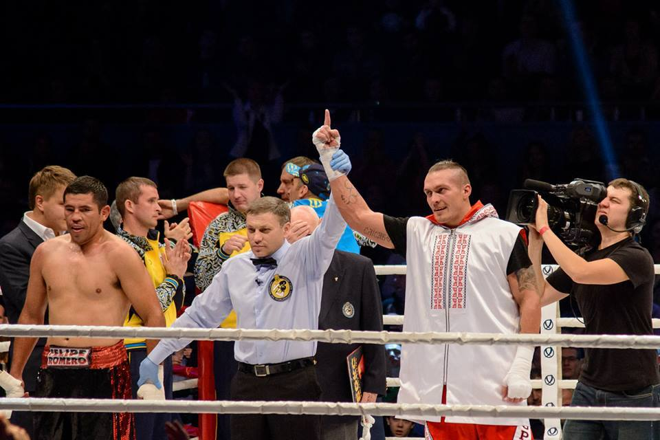
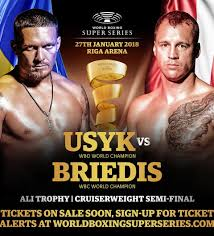
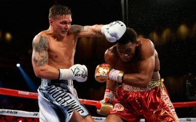
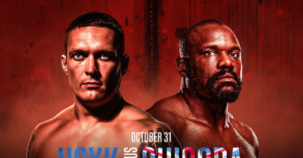

Oleksandr Usyk (January 17, 1987)
Professional boxer, heavyweight world champion according to WBA, WBO, IBF, IBO versions

Professional boxer, heavyweight world champion according to WBA, WBO, IBF, IBO versions
Born on January 17, 1987 in the city of Simferopol, Crimea. Even as a child, Usyk showed an active interest in sports - he was engaged in folk dances, judo and football, and even played in the midfield of the youth team of Simferopol "Tavria".
Usyk joined the boxing section at the age of 15 - and immediately began practicing under the guidance of coach Serhii Lapin. The first successes came to Oleksandr at the age of 18 (in 2005-2006), when he took bronze at the European Boxing Championship and won the Ukrainian Middleweight Boxing Championship (up to 75 kg)
However, Usyk did not go anywhere, but only grew in terms of sports and psychology. In 2008, Oleksandr began training under the guidance of coach Anatoly Lomachenko (Vasyl Lomachenko's father) - and published a brilliant streak in amateur boxing. Usyk won the 2008 European Championship, the 2011 World Championship and the gold of the 2012 Olympic Games, taking revenge from the same Clemente Russo in the final.

In 2013, Oleksandr Usyk signed a long-awaited contract with the Klitschko brothers' company "K2 Promotions" and began a professional career, where he immediately began to win victory after victory, conquering the audience both with excellent sports technique and a powerful punch, as well as with a modest and cheerful character.
In 2019, Usyk moved to super heavyweight (over 91 kg), where he scored big victories in fights with Derek Chisora, Anthony Joshua and Daniel Dubois. These successes finally cemented Usyk in the status of a world sports star and one of the best boxers of our time. Currently, Oleksandr Usyk is a media personality and extremely popular.He is the founder of his own brand of clothing and accessories "Usyk-17", as well as the promotional company "Usyk-17Promotion", which he works on together with his manager Oleksandr Krasyuk.



Oleksandr Usyk is not only a talented boxer, but also a symbol of national pride for Ukraine. His achievements in the ring, victory in world-class boxing competitions and winning the title of absolute world champion demonstrate remarkable willpower, technical skill and dedication to his work.Usyk is not just an athlete, he is an example of how you can achieve great goals thanks to discipline and constant work on yourself. His success in sports inspires not only young fighters, but also many people around the world to achieve their own peaks.